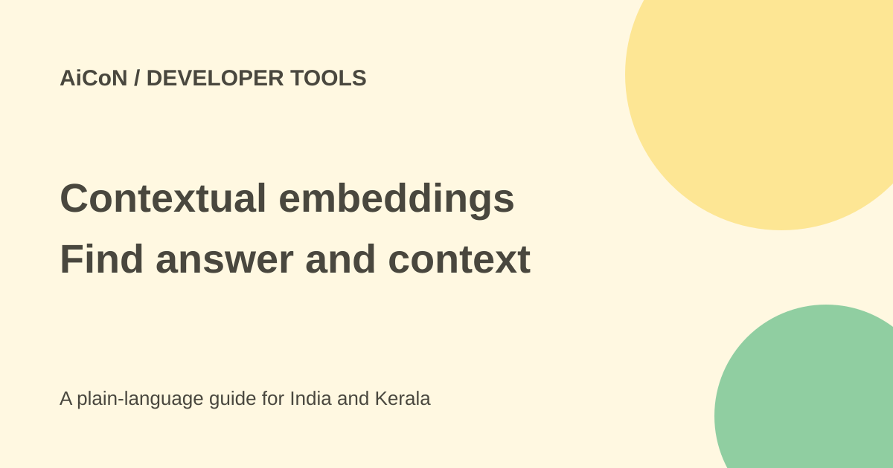

pplx-embed-v2 preview: document search with surrounding context
Perplexity's pplx-embed-v2-context-9b-preview helps software search chunks of documents while preserving surrounding context. It produces numerical embeddings, not a chat answer. This is a preview for developers with suitable computing resources.

What problem does it address?
A search system often splits a long document into short chunks. A chunk can mention a name, year or rule defined elsewhere. Searching it alone can find a plausible sentence from the wrong document or omit the evidence needed to interpret it.
This model reads chunks together and returns one embedding for each. An embedding is a list of numbers used to compare meanings. It can help retrieval, but another system still needs to read the source and produce a checked answer.
Model and benchmark caveats
The launch names a 9B model and reports leading results on context-bench and ConTEB. Context-bench is held privately by turbopuffer, and these are published vendor evaluations, not tests reproduced for this article.
The Hugging Face interface shows 8B parameters while the product and launch use the 9B name. Those displays are not enough to quote an exact runtime memory requirement. Check the weights and deployment you actually use rather than assuming any ordinary laptop is suitable.
Important encoding rules
The model card says use encode for document chunks and encode_queries for queries. Encoding a query with the document method silently reduces retrieval quality because the model uses separate query and document prefixes.
It produces unnormalised int8 embeddings. Compare with cosine similarity or normalise before using dot product. The supported dimensions are 2048 and 1024; for 1024, take the first values of the unnormalised vector and normalise afterwards. Other truncation sizes were not trained.
How to evaluate a sample corpus
- Read the model card and preview warning, and verify the licence before reuse.
- Choose a separate Python environment and suitable hardware without private files.
- Review the custom model code before permitting trust_remote_code. That setting allows repository-supplied code to run; it is not a safety label.
- Use public sample documents and label the correct answer and its supporting passages.
- Split documents consistently, keeping chunks grouped by their original document.
- Encode documents and queries with the separate methods described by the card.
- Use a supported dimension and similarity method, then measure whether the correct source and needed context are retrieved.
- Include near-identical documents, changed dates and Malayalam samples if relevant to your audience.
- Keep model version and index metadata together so you can rebuild safely after an update.
Preview versions cannot be mixed casually
The card warns that weights, embeddings and interface may change without backward compatibility. Do not mix this preview's vectors with a future release in the same index. Test a replacement and re-embed the corpus when the version requires it.
A high similarity score does not prove the document is current or that access is permitted. Apply source-date and document-permission filters separately.
Free or paid in India?
The original post described MIT licensing, but this check did not retrieve a current licence file from the model repository. Do not treat that earlier statement as verified redistribution permission. Check the current repository terms before use or reuse. The weights are publicly available, but storage, GPU resources, rented servers and electricity can cost money. No complete Indian operating total or hosted API price was verified here.
A student can inspect the documentation without starting a paid machine. Estimate corpus size, indexing frequency and hardware requirements before renting compute. A free weight download does not mean a free production service.
What changed since the original post?
We added the separate query-encoding method, normalisation and supported-dimension rules, custom-code caution and preview index incompatibility. The product name and parameter display difference is preserved rather than silently reconciled. No model was loaded or benchmark reproduced.
Frequently asked questions
Does it write answers?
No. It creates vectors for a retrieval system.
Can I mix preview and future vectors?
The card warns against it.
Does a good retrieval score prove the source is right?
No. Read and verify the actual source, date and context.
Sources: Current model card and encoding rules · Perplexity launch and vendor benchmarks. Checked 7 October 2026.